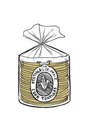

corn tortillas
Torillas are thin, unleavened flatbreads made from hominy (corn). There are 3 colors: white maize, yellow maize and blue maize, white and yellow being the most common.
Tortillas are made by curing maize in limewater, making niacin (vitamin B3) and the amino acid tryptophan bioavailable (see Pellagra). Cooking tortillas in limewater causes the corn kernels to peel off, it is then ground, cooked and kneaded into a dough, which is in turn pressed flat into patties using a rolling pin or a tortilla press and then cooked on a hot griddle.